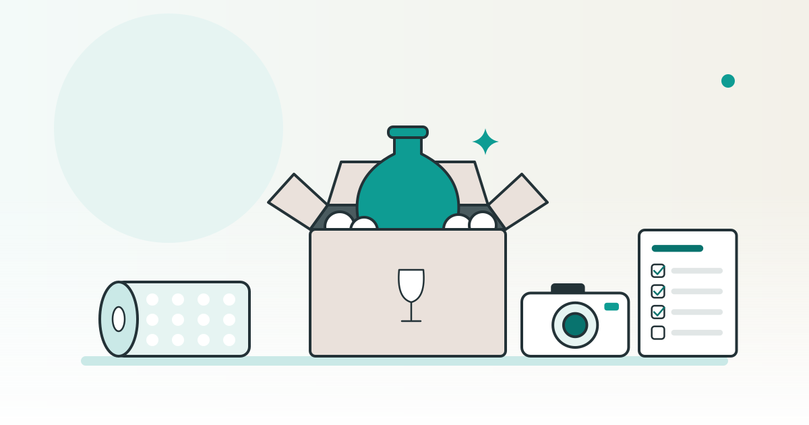

SHOPKIT コラム
割れ物の雑貨の梱包を試すには箱・緩衝材・開封の順を記録する

割れ物の梱包を試すときは、商品ごとに包み方を決め、送る前と届いた後を同じ記録でたどれるようにしましょう。箱を選ぶところから、受け取る人が開けるところまでが対象です。自宅で小さな雑貨のネットショップを始める方に向けて、記録票と写真の残し方を提案します。
この記事は、完成品のネットショップを販売している SHOPKIT が書いています。
割れ物の梱包は、商品ごとの記録票から始める
試す商品と包み方に、それぞれ見分ける名前を付けます。同じ形に見える器でも、大きさや重さ、取っ手の有無を分けて書きましょう。商品の名前だけでは、どの包み方を試したのかが後から分からなくなります。
記録票には、包んだ日、商品の品番、商品の状態、使った箱と緩衝材、写真の名前、受け取った結果を書きます。ここでいう緩衝材は、商品を保護するために周りへ入れる紙やシートなどです。
たとえば陶器のカップなら、取っ手とふちをどのように包んだかを残します。ガラスの小さな花器なら、口や細くなった部分の置き方も写真で示します。これは記録の例であり、どの商品にも共通する包み方の指定ではありません。
試しに送った結果は、その商品と包み方、送り方での記録です。規格に沿った試験や、ほかの配送でも破損しないことを証明するものとして扱わないでください。
箱と緩衝材は、商品の大きさと重さで選んで記録する
資材の名前だけでなく、実際に使った箱の状態と入れ方を残します。箱の内側の寸法、包み終えた荷物の重さ、緩衝材を入れた場所を書けば、次に試す条件を見直せます。
国土交通省の標準宅配便運送約款（PDF）は、荷物の特徴や重さ、大きさを踏まえた、運ぶのに適した荷造りを荷送人に求めています。荷造りが運送に適さない場合は、追加の荷造りを求める、荷送人の負担で荷造りをする、引受けを断る場合も定めています。実際に頼む配送先の約款と梱包の案内も、発送前に確かめましょう。
| 記録する対象 | 残す内容 | 比べるときの見方 |
|---|---|---|
| 商品の状態 | 材質、大きさ、重さ、出っ張り、包む前の傷や欠け | 同じ商品を比べているか、条件が違うか |
| 外側の箱 | 箱を識別する名前、内側の寸法、傷みの有無 | 前と同じ箱か、形や状態を変えたか |
| 商品の周り | 包む材料、重ね方、底や側面に入れた位置 | 届いたときに材料がずれた場所はどこか |
| 箱を閉じる前 | 商品の向き、隣の商品との位置関係、ふたの閉じ方 | 発送前と開封時で置き方が変わっていないか |
資材を替えて試すなら、前回から変えた箇所を記録票の目立つ所に書きます。箱も包み方も変えた結果を、緩衝材だけの効果と結び付けないようにしましょう。材料を何枚使えば足りるか、隙間をどれだけ空けるかは、この記事では一律に決めません。
関連：ネットショップの送料の決め方｜発送方法・梱包と先に伝えること
箱の中の置き方と開ける順番は、写真で残す
箱を閉じるまでの写真と、受け取って開ける写真を対応させます。写真には記録票と同じ名前を付け、包む前、包んだ商品、箱の底、商品を入れた状態、ふたを閉じた状態の順に並べておきましょう。
商品が隠れてからの写真だけでは、取っ手の向きや、底に入れた材料を読み取れません。どの写真がどの段階か、短い説明を添えます。商品が複数ある場合も、内容物を照合する手順とは別に、箱の中でそれぞれをどう置いたかに絞って記録します。
開ける人には、記録を取る目的と、外箱から順に状態を見てほしいことを先に伝えましょう。商品を取り出した後に梱包を組み直して撮った写真は、届いたままの状態の写真と分けます。
破片が見えるなど危険を感じるときは、記録のために開封を続けたり、素手で中を探ったりしないでください。安全に確認できない状態も、そのまま記録して相談する材料にします。
試しに送って、届いた状態を確かめる
受け取る人と確認する項目をそろえてから、実際に使う予定の送り方で試します。試送は、お客様の注文を使って行う前提にせず、受け取りと記録を頼める相手との間で準備しましょう。
- 送る前の条件を残す
梱包の記録に、送り方、発送日、荷物を追うための控えを対応させます。受け取る人には、確認できた範囲と確認できない所を分けて教えてもらいます。
- 外箱から順に見る
届いた日と、箱のへこみ・濡れ・開いた箇所などの有無を残します。開封できる状態なら、緩衝材と商品の位置を発送前の写真と比べます。
- 見えた結果を書き分ける
傷や欠けの場所、包みのずれ、取り出しにくかった箇所を記録します。「見た範囲で欠けは見つからなかった」と「中まで確かめられなかった」は、同じ結果にまとめないようにします。
破損があったときは、原因をその場で決めず、発送前後の写真と荷物の控えをそろえて配送先へ相談します。箱や緩衝材を片付ける前に、残す物について案内を確かめましょう。補償の対象になるかは、試送の記録だけで決めません。
試送で傷が見つからなかった場合も、商品の大きさ、詰める数、箱や送り方を変える際は、前の結果をそのまま当てはめず、変わった条件を整理して確かめます。
気付いた点は、次の包み方の手順に書き足す
観察したことと、考えた原因と、次に変えることを別々に書きます。たとえば「開封時に底の紙が寄っていた」は見えた事実です。「紙が寄ったので欠けた」は原因の判断を含みます。写真だけで原因を絞れなければ、決めつけないでおきましょう。
| 結果の残し方 | 次の記録へつなぐ書き方 |
|---|---|
| 位置が変わっていた | 発送前と開封時の写真を並べ、動いていた箇所と、次に見直す置き方を書く |
| 取り出し方に迷った | どの包みを先に外すか分かりにくかった所を残し、開ける順の案内を見直す |
| 状態を確かめられなかった | 写真や確認が足りない箇所を書き、結果を良否に振り分けず持ち越す |
手順を直したら、変更日と変更箇所、対応する試送の記録を書きます。前の写真を消して最新版だけにせず、どの結果を受けて直したのかをたどれる形にしましょう。普段使う資材の買い方や費用とは分けて、ここでは試した条件と結果の対応を残します。
関連：雑貨屋のネットショップを開くには｜品ぞろえと商品の表示・安全の確かめ方
お店を買って始めるときは、商品ごとの梱包の記録も確かめる
購入前には、梱包について何が資料にあり、何を自分で確かめるかを聞きましょう。商品の写真がそろっていることと、その商品の試送を終えていることは分けて考えます。
SHOPKITの2026年10月15日時点のサービスページは、商品と店舗を整えて販売を始める準備をした状態でお渡しすると案内しています。お渡しする内容には、お店一式と仕入れの情報、運営・集客のマニュアルが含まれます。出典：お渡しするもの。
検討するときは、商品ごとの包み方や試送の記録があるか、誰が包み、破損などがあった際はどこへ連絡するかを説明してもらいましょう。記録がない範囲は、手順が確かめられている範囲と分けて整理します。
関連：韓国雑貨のネットショップを始める｜仕入れ先の探し方と原価の見方
よくある質問
割れ物の梱包では、箱の写真だけ残せば足りますか？
箱を閉じた写真に加え、商品の状態、緩衝材の位置、商品を入れた向きを残しましょう。開封時の写真と対応させると、どの段階で状態が違っていたかを比べられます。
雑貨を試しに送って欠けがなければ、その包み方を使い続けてよいですか？
試送は、そのときの条件での記録です。商品の大きさや詰める数、箱や送り方が変わる際は、変わった条件を整理して確かめましょう。破損しないことの証明とは扱いません。
試送した雑貨が割れていたら、記録には何を書きますか？
箱と包みの状態、傷や欠けが見えた場所、確認できなかった所を分けて残します。危険な状態で開封を続けず、発送前後の写真と荷物の控えをそろえて配送先へ相談しましょう。
梱包の手順を直したら、前の写真は消してよいですか？
変更日と変更箇所を付け、前の試送の記録もたどれるように残しましょう。観察したこと、考えた原因、次に変えることを分けておくと、見直した理由を読み返せます。
※ この記事のSHOPKITのお渡しするものは、2026年10月15日時点のサービスページの記載です。公的資料は2026年10月26日に確認しました。配送の引受条件や事故時の扱いは、利用する配送先の最新の約款と案内で確かめてください。